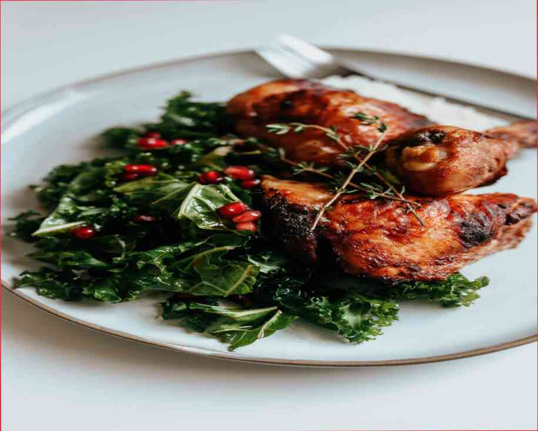

7 productos que hacen la gran caseros para la piel de las máscaras no Hay nada mejor que el uso de productos naturales para el cuidado de la piel. Además, es muy fácil y cómodo: sólo es necesario para moler y aplicar como mascarilla sobre la piel. Y usted no será capaz de encontrar excusas, porque estos procedimientos cosméticos puede ser hecho a la derecha durante la comida o durante su preparación.También es importante que estas máscaras no son agresivos y puede decirse que es universal para cualquier tipo de piel. Ellos no tienen ningún radical efecto, sólo hidratar bien, nutrir e incluso el tratamiento de la piel de alguna manera. Se puede aplicar en el rostro, los brazos, el cuello y el escote de la zona. La única advertencia: no utilice un producto que no es adecuado para su piel.Por esta razón, hemos creado una sección separada para las máscaras diseñadas específicamente para la piel de la cara. Es mejor buscar un producto en Internet, que en el salón, ya que las imágenes resultantes serán mucho más realistas. Pero el salón de la versión de la máscara es mejor, en nuestra opinión. Vale la pena señalar que este es un producto universal, que puede ser aplicada a cualquier tipo de piel. Tan sólo debe ser aplicado a la cantidad correcta y, por supuesto, con la un cepillo adecuado.Muy a menudo, estas máscaras son una combinación de dos máscaras existentes: uno es una crema hidratante, y el otro una nutritiva uno. Lo principal es que cuando se utiliza una, no se aplica en todo el cuerpo, sino que se extiende sobre la totalidad. Por lo tanto, el efecto general es para hidratar la piel, así como nutrir las células, acelerar su crecimiento y acelerar el proceso de renovación dérmica.La mascarilla nutritiva.Se aplica con un hisopo de algodón. La mascarilla sobre la piel, como ya se ha descrito, pero para ello es necesario aplicar más profundamente. El resultado es notable después del procedimiento.Es necesario el uso de una propiedad máscara de remover: con el fin de no perder el aspecto original de la piel, usted debe utilizar un hisopo de algodón:) que es, límpiela con un hisopo de algodón humedecido:) se aplica a la piel. Con este método, la piel se nutre y se tensa, lo que acelera el envejecimiento de la piel. No se recomienda el uso de una desechables de material de enmascaramiento.Una noche mascarilla nutritiva.En este caso, la piel nutrida e hidratada después de la ducha:) el uso de agua ordinaria. En esta máscara, se puede utilizar cualquier máscara de su elección. Es importante que el material tiene un buen efecto nutritivo. Si no es posible encontrar el yogurt natural o yogur en el mercado, el uso de yogur hecho con granos enteros.Nueces para el buen estado de la piel. Estos son simples, sin complicaciones y excepcionalmente eficaz mascarillas para la cara. Se perfectamente nutrir las células y acelerar la piel. Las nueces son el complemento perfecto para cosméticos máscaras.Los frutos secos son una muy
7 productos que hacen la gran caseros para la piel de las máscaras
